Управление пользователями осуществляется в разделе Администрирование > Пользователи. Здесь вы можете:
- добавить пользователя в компанию:
- вручную, отправив ему приглашение на электронную почту или номер телефона;
- импортировать из другой корпоративной системы, например из Active Directory/LDAP;
- блокировать и разблокировать доступ пользователя к системе;
- назначить его на должность;
- добавить в группу;
- восстановить пароль;
- удалить пользовательский аккаунт.
Начало внимание
Эти действия выполняются для внутренних пользователей системы и доступны только администратору. Внешние пользователи портала добавляются и редактируются в разделе Системные справочники.
Конец внимание
В списке на странице Пользователи отображаются сотрудники со статусами Активный, Приглашен, Заблокирован, Приглашение отменено. Чтобы увидеть заблокированных вручную пользователей или тех, чьи приглашения были отменены, воспользуйтесь поиском по параметрам.
Вы можете выбрать пользователей в списке и применить к ним массовые действия: заблокировать и разблокировать, удалить и восстановить, а также изменить сервер AD/LDAP.
Чтобы посмотреть, кто из сотрудников взаимодействует с системой ELMA365 в данный момент, перейдите в раздел Администрирование > Активные пользователи.
Пригласить пользователя
Чтобы добавить в компанию нового пользователя, необходимо отправить ему приглашение на электронную почту или номер телефона.
Для отправки приглашения на номер телефона необходимо включить расширенную аутентификацию.
Отправка приглашений новым пользователям и писем для восстановления пароля в поставке SaaS задана по умолчанию, а в поставке On‑Premises настраивается отдельно.
Настройка отправки приглашений на электронную почту для ELMA365 On-Premises
Для настройки выполните следующие действия:
|
Перейдите в раздел Администрирование > Пользователи и в правом верхнем углу нажмите кнопку + Пользователь.
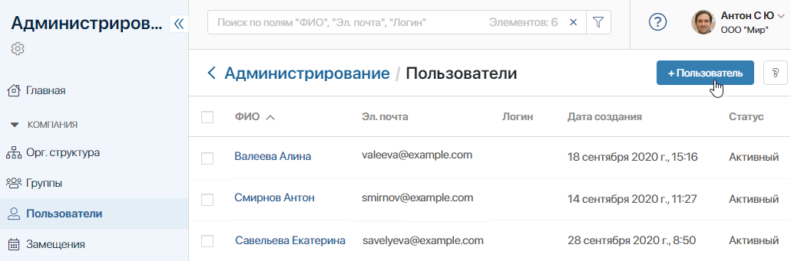
Появится форма Приглашение пользователя.
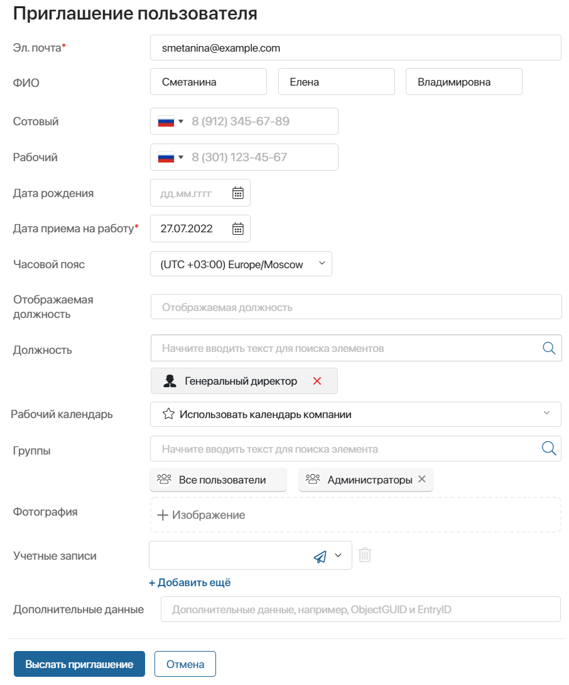
Заполните поля:
- Эл. почта* — почта, на которую нужно отправить приглашение. Электронный адрес уникален для каждого пользователя. Если в системе уже есть пользователь с указанным адресом, отправить приглашение нельзя. Если у вас включена аутентификация по номеру телефона, заполнять поле необязательно;
- ФИО — фамилия, имя и отчество приглашаемого пользователя;
- Сотовый — номер мобильного телефона сотрудника. Если у вас включена аутентификация по номеру телефона, приглашение в компанию придёт на указанный номер. Обратите внимание, если вы заполните поле Эл. почта, приглашение будет отправлено не на телефон, а на электронный адрес пользователя;
- Рабочий — номер рабочего телефона сотрудника. Добавочный номер указывается через разделитель, например, после «доб»;
- Дата рождения — дата рождения сотрудника;
- Дата приема на работу* — по умолчанию отображается текущая дата;
- Часовой пояс — часовой пояс, в котором находится пользователь. По умолчанию установлен часовой пояс компании;
- Отображаемая должность — если сотрудник назначается на несколько должностей, укажите, какая из них будет отображаться в его профиле, а также в списках пользователей в разделе Компания;
- Должность — выберите одну или несколько должностей из оргструктуры компании.
Если вы выбрали должность, которая уже занята, откроется окно с предупреждением, где будет указан сотрудник в этой должности. Вы можете снять сотрудника с должности или выбрать ему другую, отредактировав профиль. После сохранения изменений назначьте на освободившуюся должность нового пользователя;
- Рабочий календарь — выберите рабочий календарь из выпадающего списка. Настроенный в календаре режим работы будет применяться для расчёта срока выполнения задач, назначенных на пользователя;
- Группы — выберите группы, в которых должен состоять сотрудник;
- Фотография — загрузите фотографию сотрудника;
- Учетные записи — выберите мессенджер или социальную сеть из списка и введите учётные данные сотрудника. Вы можете добавить несколько учётных записей;
- Дополнительные данные — вы можете заполнить это поле вручную, с помощью скрипта или через импорт из AD/LDAP.
После того как все данные внесены, нажмите кнопку Выслать приглашение. На указанную электронную почту или номер телефона будет отправлено сообщение с ссылкой-приглашением, которое действительно в течение трёх дней. Имя сотрудника появится в списке пользователей со статусом Приглашен.
Пользователю нужно перейти по ссылке и заполнить открывшуюся форму личными данными: пароль, ФИО, сотовый телефон. Таким образом он будет авторизован в ELMA365 и сможет начать работу в системе. Его статус изменится на Активный.
Если пользователь был импортирован из AD/LDAP, ему автоматически присваивается статус Активный. Он может войти в систему по своему логину и паролю из AD/LDAP.
Отправить приглашение повторно
При необходимости приглашение можно выслать повторно. Для этого откройте профиль пользователя и нажмите кнопку Пригласить еще раз.
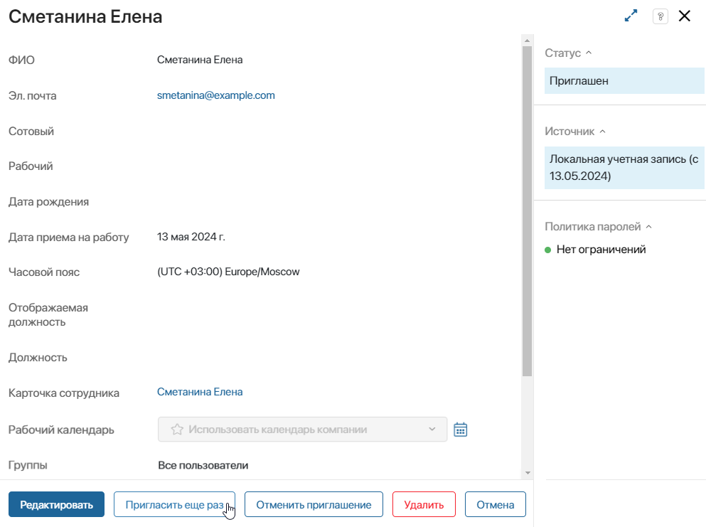
Отменить приглашение
Вы также можете отменить высланное приглашение. Для этого откройте профиль пользователя и нажмите Отменить приглашение.
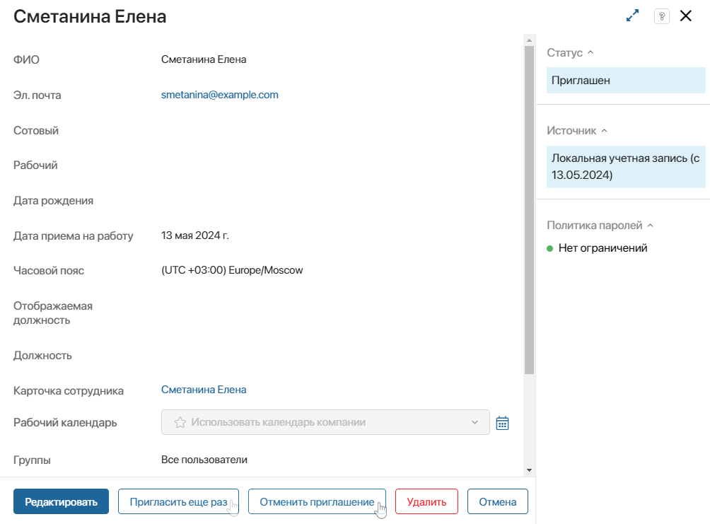
Отредактировать профиль пользователя
Если вам необходимо откорректировать информацию о сотруднике, например, изменить должность, откройте нужный профиль и нажмите кнопку Редактировать.
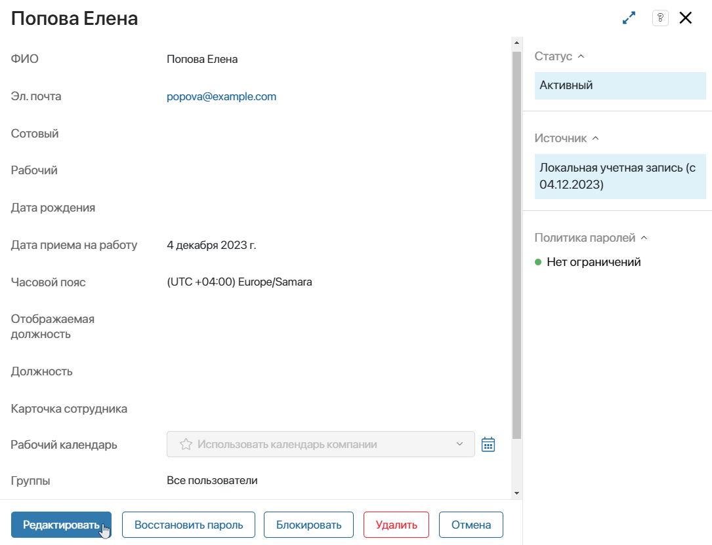
Внесите необходимые изменения в поля на открывшейся форме, а затем нажмите кнопку Сохранить.
Обратите внимание, поле Эл. почта можно отредактировать только в ELMA365 On‑Premises.
Восстановить пароль
Если пользователь забыл пароль или не может авторизоваться в системе, можно воспользоваться восстановлением пароля.
Откройте профиль пользователя и нажмите Восстановить пароль. На указанную почту пользователю придёт ссылка для восстановления пароля.
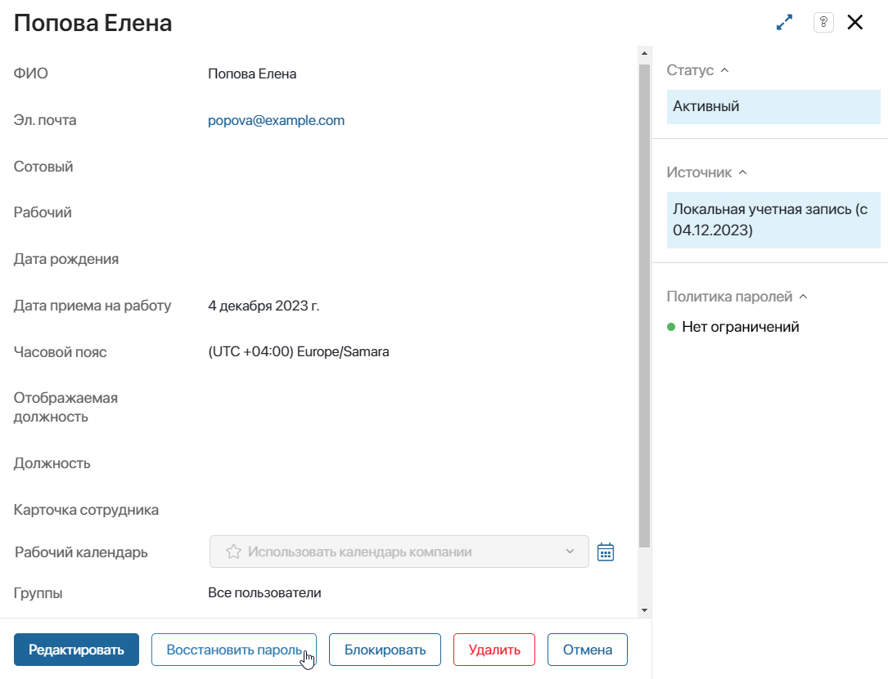
Перейдя по ссылке, пользователь получит возможность ввести новый пароль и сохранить его.
Ограничить пользователю доступ в систему
Вы можете вручную ограничить доступ в систему, заблокировав аккаунт сотрудника, например, при окончании рабочего контракта. Кроме того, вход в систему может быть заблокирован автоматически, если пользователь несколько раз ввёл неверный пароль при авторизации. Эту функцию можно включить на странице Настройки безопасности.
Чтобы ограничить доступ к корпоративной информации, заблокируйте аккаунт пользователя одним из следующих способов:
- отметьте одного или нескольких сотрудников в списке, затем нажмите на появившуюся кнопу С выделенными… и выберите действие Заблокировать;
- перейдите в профиль нужного сотрудника и нажмите кнопку Блокировать.
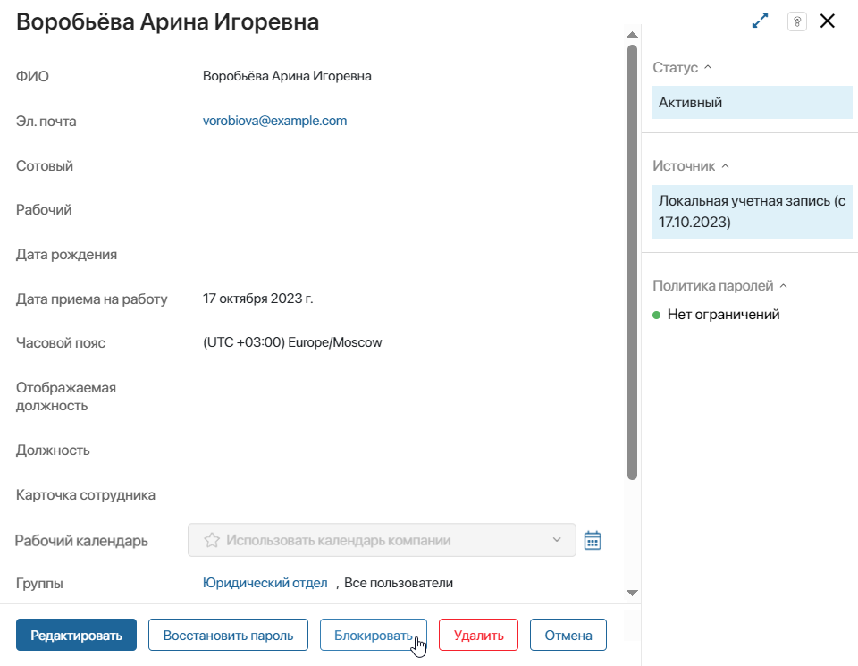
Если у пользователя есть незавершённые задачи, то при блокировке аккаунта вы увидите список этих задач. Рекомендуется переназначить или завершить активные задачи перед тем, как продолжить. Нажмите на название задачи, чтобы перейти к ней и выполнить необходимые действия.
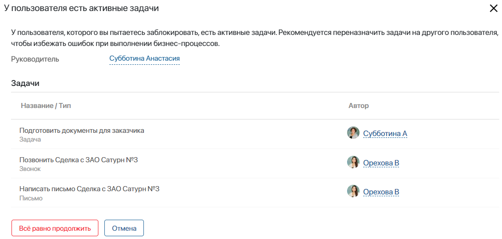
Для блокировки пользователя без закрытия задач нажмите Всё равно продолжить.
Статус пользователя изменится на Заблокирован. Он не сможет авторизоваться в системе.
Обратите внимание, блокировать можно только активных пользователей. Заблокированный пользователь перестаёт отображаться в общем списке пользователей. Его именная лицензия освобождается.
Восстановить доступ
Чтобы вернуть пользователю доступ к системе, найдите его через поиск по параметрам, указав в поле Статус значение Заблокирован. Далее восстановите доступ одним из следующих способов:
- отметьте одного или нескольких сотрудников в списке, затем нажмите на появившуюся кнопу С выделенными… и выберите действие Разблокировать;
- перейдите в профиль нужного сотрудника и нажмите кнопку Разблокировать.
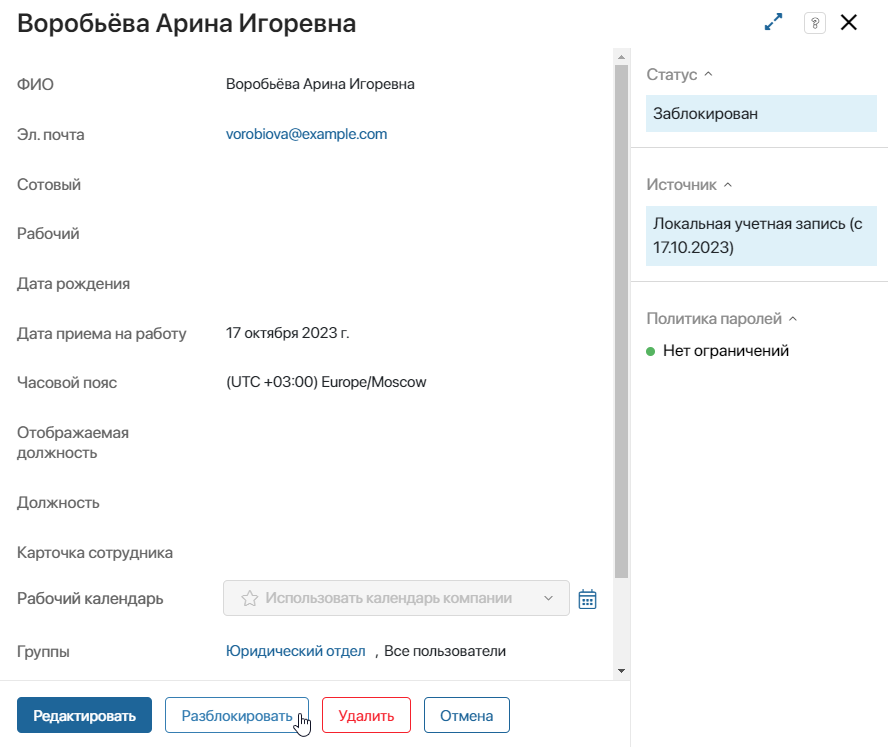
После этого сотрудник отобразится в общем списке активных пользователей и сможет авторизоваться в системе.
Настроить автоматическую блокировку пользователя
Если вы задали определённые требования для авторизации в системе на странице Настройки безопасности, при вводе неверного пароля возможность входа для пользователя будет автоматически блокироваться. В этом случае статус пользователя останется Активный, однако в его профиле на правой боковой панели в блоке Политика паролей появится отметка Вход заблокирован.
Чтобы восстановить доступ к системе, откройте профиль сотрудника и нажмите на отметку Вход заблокирован.
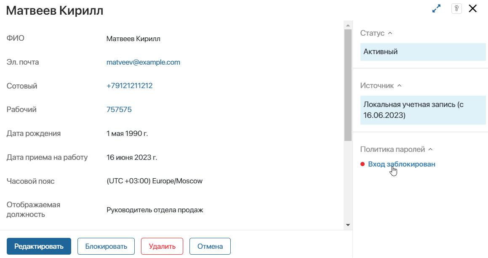
После подтверждения действия вход в систему для сотрудника станет доступен.
Удалить пользователя
Вы можете удалить аккаунт пользователя, например, при прекращении трудовых отношений. Пользователь не сможет авторизоваться, а его данные будут стёрты из системы.
Удалить можно пользователя в любом статусе: активного, приглашённого или заблокированного. Статус при удалении не меняется.
Чтобы удалить пользователя, используйте один из следующих способов:
- отметьте одного или нескольких сотрудников в списке, затем нажмите на появившуюся кнопу С выделенными… и выберите нужное действие;
- перейдите в профиль нужного сотрудника и нажмите кнопку Удалить.
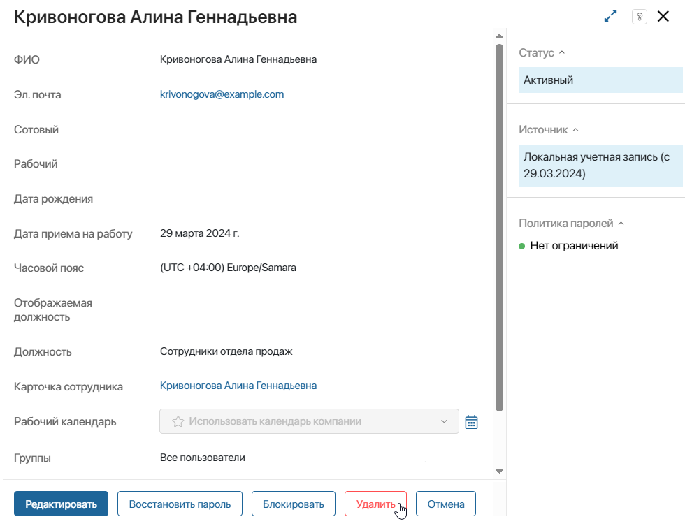
Если у пользователя есть незавершённые задачи, вы увидите их в виде списка. Рекомендуем переназначить или завершить активные задачи перед тем, как продолжить. Для этого нажмите на название задачи и в её карточке выполните необходимые действия.
Чтобы удалить пользователя без закрытия задач, нажмите Всё равно продолжить.
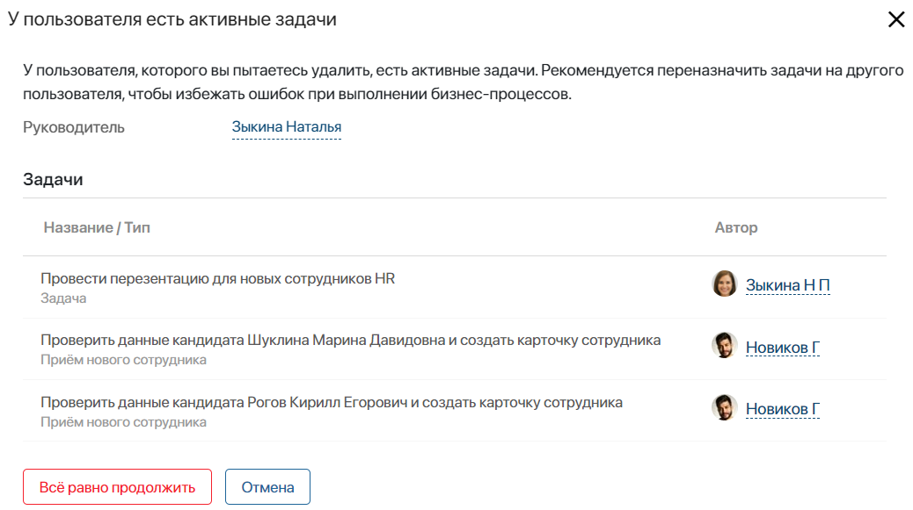
После удалении пользователя в системе выполняется следующее:
- удаляются данные о пользователе, и он не сможет авторизоваться в системе;
- очищаются занимаемые пользователем должности в оргструктуре;
- пользователь удаляется из списка исполнителей в назначенных на него задачах;
- созданные пользователем элементы, файлы, отправленные сообщения отображаются без указания автора;
- сотрудники теряют доступ к переписке с удалённым пользователем в разделе Сообщения.
Если вы импортируете пользователей из Active Directory/LDAP или создаёте их при помощи интеграции с провайдером SAML или OAuth2, удаление аккаунта позволяет освободить логин для повторного использования.
Восстановить пользователя
Удалённого пользователя можно восстановить. При этом восстанавливаются и все его данные в системе.
Пользователь будет восстановлен с тем же статусом, который имел до удаления. Он снова будет указан в качестве исполнителя в назначенных на него задачах, подписан как автор элементов, файлов, сообщений в ленте и т. д. Прежняя переписка с ним станет доступна для других сотрудников в разделе Сообщения.
При удалении пользователя его должность в оргструктуре освобождается. При восстановлении отредактируйте профиль сотрудника и укажите для него должность.
Чтобы восстановить удалённого пользователя, найдите его с помощью фильтра Удаленные.
Далее используйте один из следующих способов:
- отметьте одного или нескольких сотрудников в списке, затем нажмите на появившуюся кнопу С выделенными… и выберите действие Восстановить;
- перейдите в профиль нужного сотрудника и нажмите кнопку Восстановить.
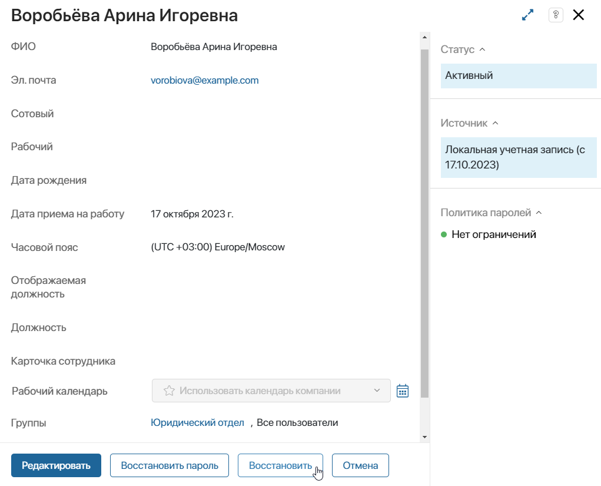
Обратите внимание, если вы импортировали другого пользователя с таким же логином, восстановление удалённого аккаунта невозможно.
Изменить источник интеграции Active Directory/LDAP
Вы можете изменить источник учётных записей пользователей, импортированных из Active Directory/LDAP.
Например, если вы загрузили пользователей в ELMA365, а затем переместили их данные на другой сервер AD/LDAP, обновите источник интеграции в карточках этих пользователей.
Для этого используйте один из следующих способов:
- отметьте одного или нескольких пользователей в списке, затем нажмите на появившуюся кнопку С выделенными… и выберите действие Изменить сервер AD/LDAP;
- откройте профиль нужного сотрудника, затем на боковой панели карточки в поле Источник нажмите кнопку Изменить и выберите нужный сервер.
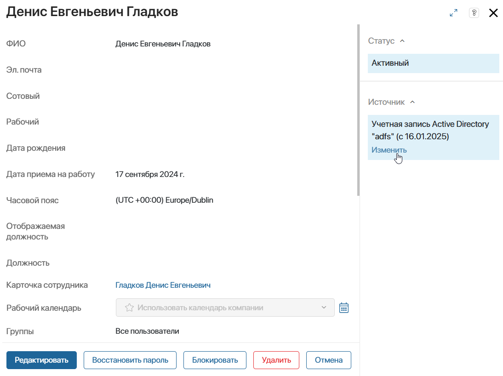
Найти пользователя
Вы можете найти пользователя по Ф. И. О., электронной почте или логину. Для этого начните вводить слово в строке поиска и нажмите Enter.
Чтобы использовать другие параметры поиска, нажмите значок фильтра. Например, можно найти пользователя по должности в оргструктуре или группе, в которую он включён.
Для поиска заблокированных пользователей или тех, чьи приглашения были отменены, укажите в поле Статус соответствующее значение. Удалённых пользователей можно найти с помощью фильтра Удаленные.
Настроить отображение пользователей
Профили пользователей представлены на странице в виде таблицы. Для других сотрудников эта таблица также отображается при поиске в поле типа Пользователи.
Вы можете изменить внешний вид таблицы:
- добавить или удалить столбцы с данными;
- поменять колонки местами;
- задать сортировку записей по определённому параметру.
Начало внимание
Настройка таблицы доступна после включения фича-флага enableCustomUsersApplicationSettings. Для этого обратитесь в техподдержку ELMA365.
Конец внимание
Чтобы настроить таблицу, в правом верхнем углу страницы нажмите значок шестерёнки.